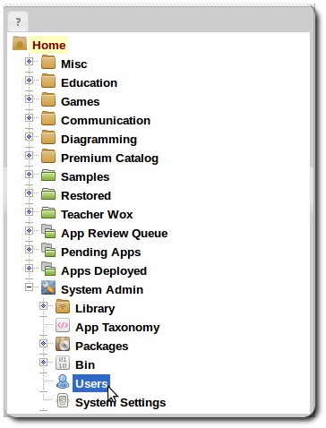
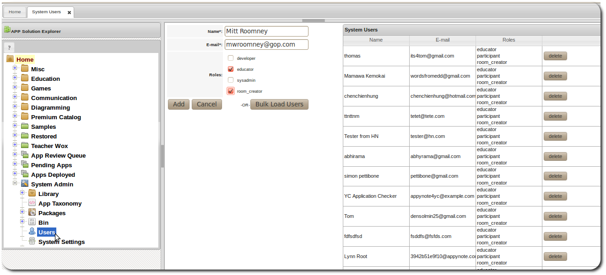
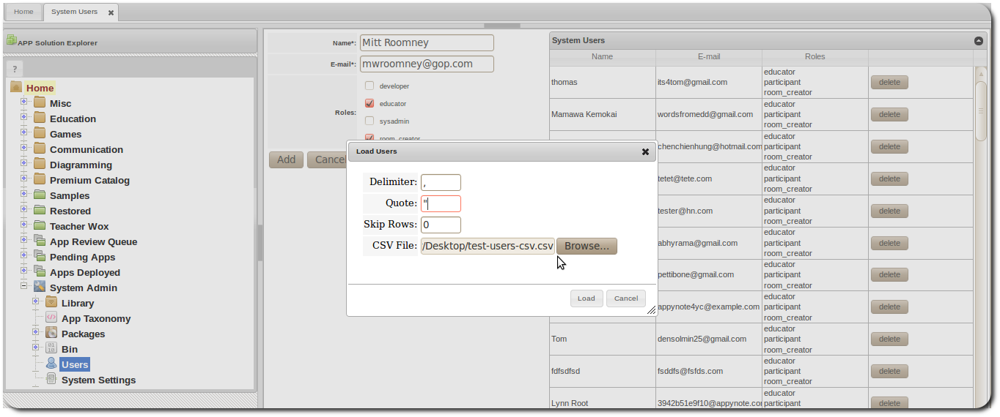

User Management
Managing Users
Using the user management interface, users can be added, edited and deleted.
Adding Users
-
Click the Users item in the navigation panel to open the user management interface.
 -
Complete the user info form and click the add button.
 -
Additionally, users can be bulk loaded from a csv file by clicking the bulk load button.
 - Note that the CSV file must have two columns, the first column should be the fullname of the user and the second column should be user id which is the email address of the user.
- Users added through the administrative tool will have accounts created and default groups created for each user. Each user would receive an invite email notifying them of the new account.
Editing Users
-
User roles can be changed through the user administration interface.

- At the moment users would have to login to the workspace to change their login information for both email and password and their names as well.
Deleting Users
- Users can be deleted by clicking the delete button in the user list.
- At the moment users would have to login to the workspace to change their login information for both email and password and their names as well.